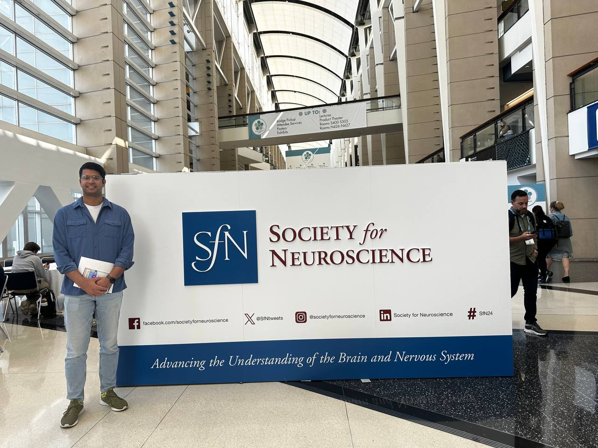
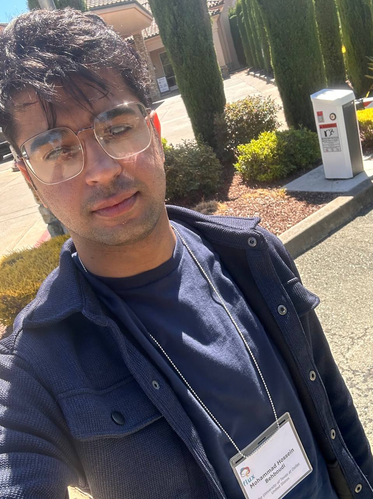
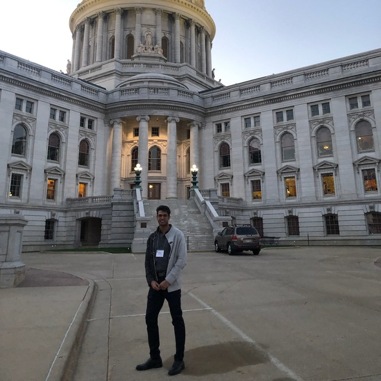
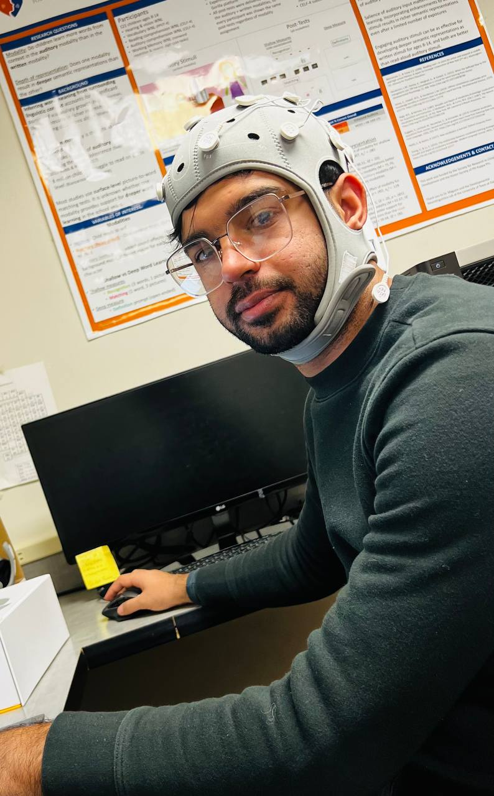

Mohammad Hossein
Behboudi
Biosignal × ML × Foundation Models
I build the computational infrastructure that turns raw physiological signals into foundation model representations transferable across subjects, devices, and any downstream task.
Track Winner
Sessions Conducted
Ph.D. candidate in Cognition & Neuroscience at UT Dallas with an Electrical Engineering foundation. I specialize in the full computational stack for physiological signals: universal data readers across formats (EDF, BDF, HDF5, BrainVision), automated preprocessing handling cross-device variability, and foundation model architectures that learn transferable representations from unlabeled data for any downstream task—BCI, clinical diagnostics, or wearable health.
I've built a novel connectivity algorithm (MDPC) adopted by multiple research groups, engineered automated pipelines processing 500+ GB across heterogeneous recording systems, and designed a clinical diagnostic system achieving 95% accuracy from single-channel recordings.
Selected Work
Novel Cross-Frequency Connectivity Algorithm
Developed Time-Lagged Cross-Frequency MDPC to characterize dynamic information flow across brain networks. Full tri-language pipeline (Python, MATLAB, R) with automated preprocessing, spectral decomposition, and mixed-effects statistical modeling.
AI-Driven Sleep Apnea Diagnosis
Clinical diagnostic system using complexity features (fractals, Hurst exponent, entropy measures) with mRMR feature selection and SVM/KNN from single-channel recordings. 95% accuracy. Two peer-reviewed publications.
Unified Biosignal Data Infrastructure
Universal data readers and preprocessing pipelines handling EDF, BDF, BrainVision, and HDF5 across multiple recording systems with different sampling rates, channel counts, and reference schemes. Automated artifact detection for 100+ participants.
Mobile Biosignal Collection Platform
Portable stimulus and data synchronization system for collecting neural recordings outside controlled lab environments.
Technical Stack
Signal Processing & Data Engineering
Multi-channel preprocessing, artifact detection (ICA, spectral, threshold), cross-device normalization, montage mapping, time-frequency decomposition (FFT, STFT, wavelets), connectivity (coherence, PLV, wPLI), cross-frequency coupling, graph theory, complexity & entropy features. Universal data readers for EDF/BDF/HDF5/BrainVision.
Foundation Models & Deep Learning
Self-supervised pretraining (masked modeling, contrastive learning), VQ-VAE tokenization, Transformer encoders, Graph Neural Networks, 1D-CNNs, LSTMs. Variable-channel handling via attention masks, mixed-precision training, experiment tracking, HPC workflows.
Classical ML & Statistics
SVM, KNN, ensemble methods (RUSBoost), feature engineering & selection (mRMR, mutual information), mixed-effects models, ANOVA/MANOVA, permutation & bootstrap inference, power analysis, IRB-compliant protocol design.
Languages & Infrastructure
Python (PyTorch, MNE, scikit-learn, SciPy, pandas, h5py), MATLAB (EEGLAB, FieldTrip), R (lme4, tidyverse), Git, Bash, SLURM HPC, FreeSurfer, SPM.
Research Output
Neural oscillations during predictive sentence processing in young children.
Benítez-Barrera, Behboudi, Maguire (2024). Brain & Language · doi
Taking culture and context into account: SES and brain development.
Schneider, Behboudi, Maguire (2024). Brain Sciences · doi
Rethinking household size and children's language environment.
Poudel et al. incl. Behboudi (2024). Dev. Psychology · doi
Gamma oscillation during sentence processing in early adolescence.
Behboudi, Castro, Chalamalasetty, Maguire (2023). Brain Sciences · doi
Sleep apnea diagnosis using complexity features.
Gholami, Behboudi et al. (2022). Springer LNCS · doi
Diagnosis of Sleep Apnea using different entropy measures.
Gholami, Behboudi et al. (2021). IEEE ICSPIS · doi
Novel word inferencing in noisy environments for non-native speakers.
Benítez-Barrera, Behboudi et al. Language and Speech
Ph.D., Cognition & Neuroscience
M.Sc., Applied Cognition & Neuroscience
B.Sc., Electrical Engineering



